7 Štatistické testovanie hypotéz
Majme dve skupiny a chceli by sme vedieť, či sú tieto skupiny rôzne.
- Líšia sa pacienti, ktorí dostali inovatívnu liečbu od tých ktorí dostali tradičnú liečbu?
- Majú študenti/tky z osemročných gymnázií lepšie výsledky ako tí/tie zo śtvorročných gymnázií?
- Sú čitatelia denníka Alobal náchylnejší na podľahnutie konšpiráciám?
- Zarábajú viacej absolventi štúdijného odboru matematika alebo kombinovaného štúdijného odboru záhradkárstvo a kulturistika?
Máme však v dispozícii len vzorku limitovanej veľkosti. Častokrát nás zaujíma, či sa tieto dve skupiny líšia v strednej hodnote. Nie je to samozrejme úplne to isté, ako to, že sú celé distribúcie týchto dvoch skupín rovnaké ale je to dobrý štart. A je to zaujímavé a zrozumiteľné.
Začnime jednoduchým príkladom. Porovnajme dve vzorky náhodných premenných. Jedna náhodná premenná bude mať strednú hodnotu 1, druhá 1.2. \(X_1 \sim N(1,1)\) a \(X_2 \sim N(1.2,1).\)
Vygenerujme si vzorky veľkosti 30 a zakreslime:
set.seed(54459)
sim_hist <- function(mu1, mu2, nSim=20){
data_mu <- data.frame(variable=factor(rep(c("X_1", "X_2"), each=nSim)),
value= c(rnorm(nSim, mean=mu1, sd=1),
rnorm(nSim, mean=mu2, sd=1))
)
mu <- data_mu %>% group_by(variable) %>% summarise(group_means = mean(value))
g <- ggplot(data_mu, aes(x=value, color=variable, fill=variable)) +
geom_histogram(aes(y=..density..), position="identity",
alpha=0.5,
bins=30)+
geom_density(alpha=0.6)+
geom_vline(data=mu, aes(xintercept=group_means, color=variable),
linetype="dashed")+
geom_text(data=mu, aes(x=group_means,y=0.7, hjust=c(2,-1),
label= as.character(round(group_means,2)), color=variable))+
labs(title=paste0("Histogram (n = ",nSim,")"),x="Values", y = "Density")+
theme_classic() +
theme(legend.position="bottom")
return(g)
}
g <- lapply(1:9,function(n) sim_hist(1,1.2,30))
plot_grid(g[[1]],g[[2]],g[[3]],
g[[4]],g[[5]],g[[6]],
ncol = 3, labels = "AUTO")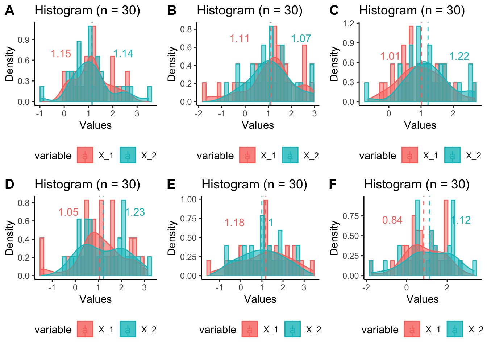
Je \(n=30\) pozorovaní dosť na to, aby sme rozlíšili medzi týmito dvomi vzorkami? Nezabúdajme, že v realite máme len jednu vzorku.
Skúsme \(n=300.\)
g <- lapply(1:9,function(n) sim_hist(1,1.2,300))
plot_grid(g[[1]],g[[2]],g[[3]],
g[[4]],g[[5]],g[[6]],
ncol = 3, labels = "AUTO")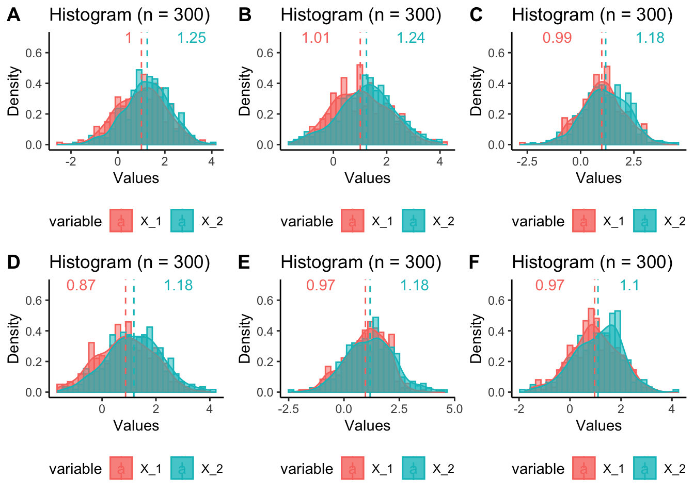
OK, lepšie.
Skúsme teraz \(n=10000.\)
g <- lapply(1:9,function(n) sim_hist(1,1.2,10000))
plot_grid(g[[1]],g[[2]],g[[3]],
g[[4]],g[[5]],g[[6]],
ncol = 3, labels = "AUTO")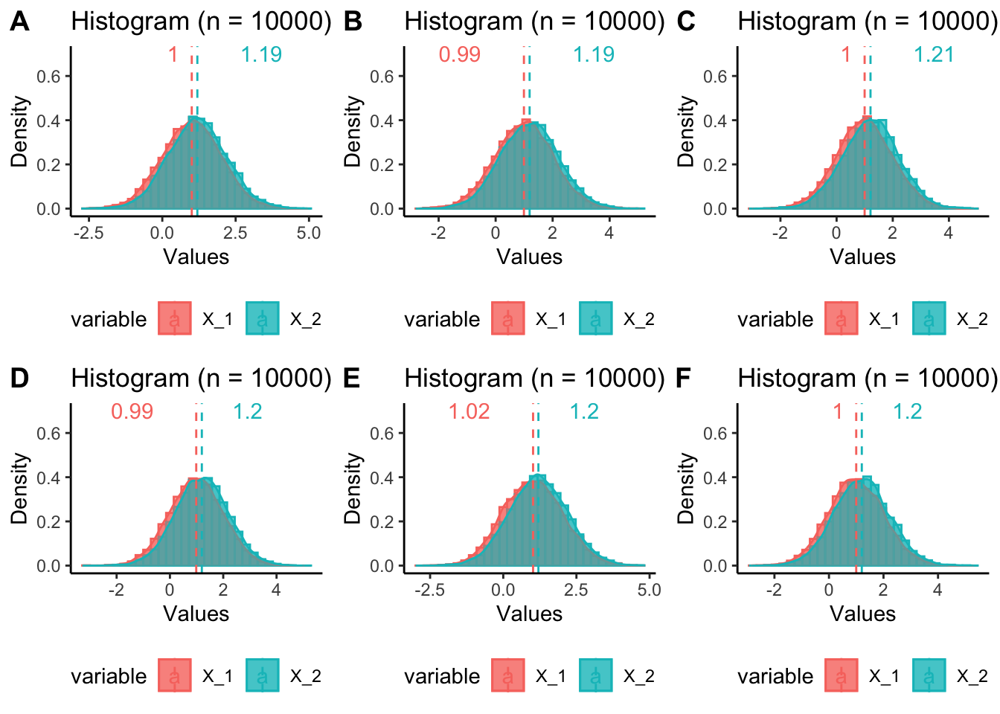
Vyskúšali sme si a dozvedeli sme sa jednu neprekvapivú vec. S rastúcim počtom pozorovaní vieme dobre odlíšiť aj malý rozdiel medzi premennými.
V realite my samozrejme nevieme z akej distribúcie tie dve vzorky pochádzajú.
7.1 Jednovýberové testy
Teraz budeme mať len jednu vzorku pozorovaní. Náhodnú iid vzorku veľkosti \(n\).
7.1.1 Test na základe normálnej aproximácie (Z-test)
Začneme najjednoduchším prípadom. Prepokladajme, že naše pozorovania pochádzajú z normálneho rozdelenia s neznámou strednou hodnotou a s neznámou varianciou. Nech ide o zmenu výsledku na teste. Študent absolvuje test na začiatku semestra a potom (podobný) test na konci semestra. A chceli by sme vedieť či sa výsledky zlepšili. Teda, že či sa študenti niečo naučili.
set.seed(437)
data_test <- data.frame(cas=factor(rep(c("pred", "po"), each=30)),
test= c(rnorm(30, mean=50, sd=10),
rnorm(30, mean=65, sd=5))
)
zmena <- data_test$test[which(data_test$cas=="po")] - data_test$test[which(data_test$cas=="pred")]
ggplot(data=as.data.frame(zmena),aes(x=zmena)) +
geom_histogram(aes(y=..density..), position="identity",
alpha=0.5,
bins=30)+
geom_density(alpha=0.6)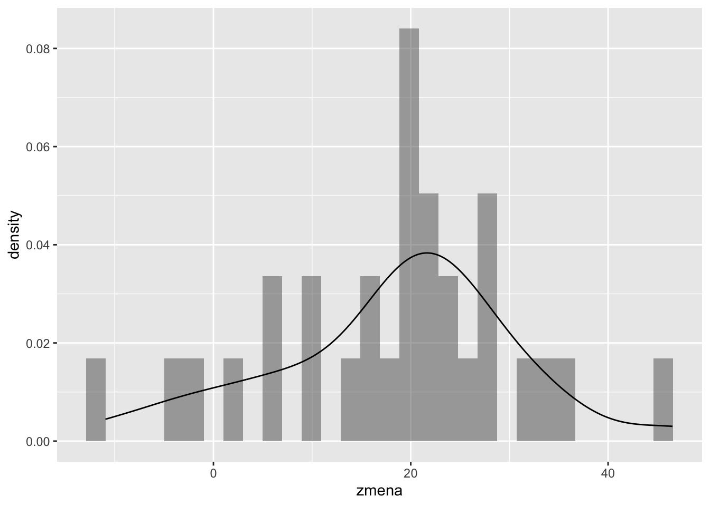
## [1] 18.25302Väčšina študentov sa zlepšila ale nájdu sa aj takí, ktorí sa dokonca zhoršili, konkrétne traja. Priemerné zlepšenie je \(18.25\).
Chceli by sme vedieť či je stredná hodnota väčšia ako \(15\) alebo nie. Nuž vidíme, že v našom prípade je o \(3.25\) viacej. Ako veľmi si ale môžeme byť tým istí?
Na to aby sme to vedeli posúdiť potrebujeme nejakým spôsobom odhadnúť ako veľa je variability v tom čísle \(18.25,\) ako blízko by sme očakávali, že má byť k čislu 15. Ako sme videli, čím viacej máme pozorovaní tým menej neistoty je v tom, ako ďaleko je tento aritmetický priemer (18.25) od skutočného populačného priemeru (15). Zo sekcie o zákone o veľkých čislach vieme, že
Ak \(X_1, X_2, X_3, \dots {\text{iid} }, \text{E}[X_1] = \mu, \text{Var}[X_1] = \sigma^2 \implies \bar{X}_n \equiv \frac{X_1 + X_2 + \dots + X_n}{n} \rightarrow_D N(\mu, \frac{\sigma^2}{n}),\)
pokiaľ \(X_1, X_2,...\) sú združene nezávislé a rovnako rozdelené (iid = independent and identically distributed) náhodné premenné.
Takže vidíme, že variancia nášho odhadu klesá proporionálne veľkosti dátovej vzorky \(n.\)
Z tohoto máme, že \[\sqrt{n}(\bar{X}_n - \mu) \rightarrow_D N(0,\sigma^2),\] takže \[\sqrt{n}\frac{\bar{X}_n - \mu}{\sigma} \rightarrow_D N(0,1).\] Čo nám z toho vyplýva? Nuž, že vieme čosi povedať o pravdepodobnostnom správaní priemeru, za predpokladu, že vieme strednú hodnotu \(\mu\) a varianciu \(\sigma^2.\) A čo s tou smerodajnou odchýlkou \(\sigma\)? Vieme ju odhadnúť pomocou výberovej smerodajnej odchýlky \(S,\) ktorá je odmocninou z výberovej variancie \(S^2\):
\[S^2 = \frac{\sum_{i=1}^n(X_i - \bar{X}_n)^2}{n-1}.\] Vieme, že \(S^2 \rightarrow_P \sigma^2,\) kde symbol \(\rightarrow_P\) označuje konvergenciu podľa pravdepodobnosti. Preto
\[Z \equiv \sqrt{n}\frac{\bar{X}_n - \mu}{S} \rightarrow_D N(0,1).\]
## [1] 154.5722## [1] 154.5722## [1] 12.43271Čo sme sa dozvedeli? Ak by bola stredná hodnota \(\mu\) skutočne rovná 15, potom by \(Z\) mala byť (približne) \(N(0,1)\) rozdelená.
V našom prípade máme len jednu realizáciu \(Z\), a to konkrétne \[\sqrt{30}\frac{18.25-15}{12.43} = 1.43.\] Ako veľmi je táto jedna hodnota 1.43 kompatibilná s normálnym rozdelením? Pozrime sa na obrázok.
x <- seq(-3,3,by=0.1)
fx <- dnorm(x)
df <- data.frame(x=x,y=fx)
ggplot(df,aes(x,y)) +
geom_line() +
geom_vline(xintercept=1.43, col = "red") +
theme_classic()+
labs(y="hustota N(0,1)")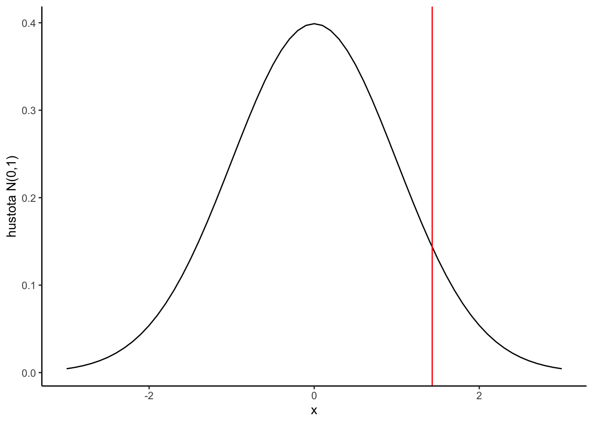
Ako to kvantifikovať? No môžeme spočítať pravdepodobnosť ešte extrémnejšej situácie. To je oblasť vyšrafovaná nižšie:
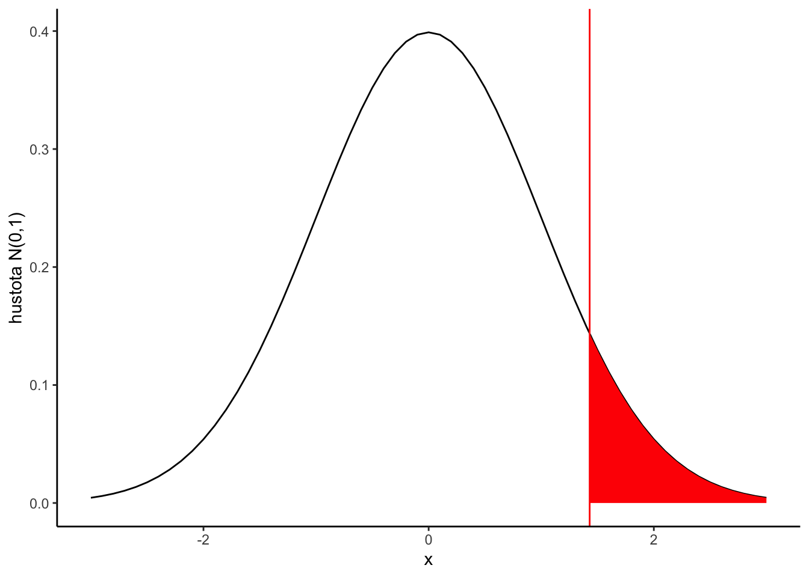
A je rovná \[\int_{1.43}^{\infty} \phi(x) dx = 1-\Phi(1.43) = 0.076,\] kde## [1] 0.07635851\(\phi(x) = \frac{1}{2\pi}e^{-\frac{x^2}{2}},\) takže funkcia hustoty normovaného normálneho rozdelenia.
To znamená, že ak by sme opakovali takýto pokus
- zozbierali 30 iid pozorovaní
- skutočná stredná hodnota bola \(\mu = 15\)
- spočítali sme \(S^2\) a následne \(Z = \sqrt{n}\frac{\bar{X}_n - \mu}{S}\)
Tak takéto \(Z\) by malo normálne rozdelenie a hodnotu väčšiu ako 1.43 by sme dostali zhruba v \(7.6\%\) prípadov. Je to veľa, je to málo? To záleží od toho ako veľmi ste ochotní sa mýliť. Každopádne je to číslo zrozumiteľné a hovorí nám to ako veľmi je číslo \(\mu = 15\) kompatibilné s našimi dátami. Tomuto hovoríme jednostranný test nulovej hypotézy \(\mu=15\) voči alternatíve \(\mu > 15\) na základe normálnej aproximácie. Hodnota 0.076 sa nazýva p-hodnota tohoto testu.
Mohli by sme uvažovať extrémnosť situácie oboma smermi. Takže by sme pripúšťali, že študenti sa môžu zlepšiť aj menej ako o 15 bodov. V tom prípade by sme kvantifikovali kompatibilnosť 1.43 s dátami takto:
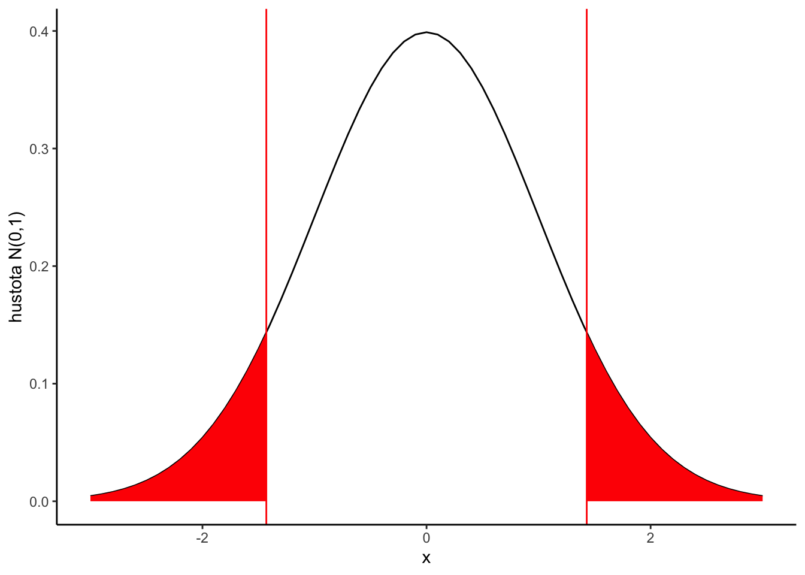
Kedže distribúcia normovanej normálnej náhodnej premennej je symetrická, dostávame \[\int_{-\infty}^{-1.43} \phi(x) dx + \int_{1.43}^{\infty} \phi(x) dx = \Phi(-1.43) + 1-\Phi(1.43)= 2(1-\Phi(1.43)) = 2 \cdot 0.076 = 0.152.\] Tomuto hovoríme obojstranný test nulovej hypotézy \(\mu=15\) voči alternatíve \(\mu \neq 15\) na základe normálnej aproximácie. Hodnota 0.152 sa nazýva p-hodnota tohoto testu.
Ako to funguje v praxi? Tu je vysvetlenie spolu so slovníkom:
- Zvolím si nulovú hypotézu, ktorú chcem otestovať (napr. \(\mu=15\)). K nej si zvolím alternatívnu hypotézu (napr. \(\mu > 15\)).
- Zvolím si hladinu významnosti \(\alpha\). Napríklad \(\alpha = 0.05.\) To znamená, že si poviem, ako veľmi som ochotný sa mýliť v zmysle, že zamietnem pravdivú hypotézu.
- Ak je moja p-hodnota testu menšia ako hladina významnosti \(\alpha,\) potom zamietam nulovú hypotézu. To znamnená, že vzhľadom na moju fixnú ochotu mýliť sa, je hodnota testovacej štatistiky príliš extrémna na to, aby bola kompatibilná s mojou hypotézou.
- Ak je moja p-hodnota testu väčšia ako hladina významnosti \(\alpha,\) potom nezamietam nulovú hypotézu. {} Znamená to, že nemám dosť dôkazov na to, aby som ju zamietol, vzhľadom na to, koľko som ochotný sa mýliť.
- Náhodnú premennú \(Z\) nazývame testovacia štatistika a takú hodnotu \(c\), že platí \(P(Z > c) = \alpha\) v prípade jednostranného testu a \(P(|Z| > c) = \alpha\) v prípade obojstranného testu, nazývame kritická hodnota testu. Napríklad kritická hodnota obojstranného testu na hladine významnosti \(0.05\) je \(1.96,\) lebo \(P(|Z|>1.96)=0.05.\)
V Rku zbehneme test veľmi jednoducho.
##
## One-sample z-Test
##
## data: zmena
## z = 1.4331, p-value = 0.07591
## alternative hypothesis: true mean is greater than 15
## 95 percent confidence interval:
## 14.51938 NA
## sample estimates:
## mean of x
## 18.253027.1.1.1 Intuícia
Takže ešte raz. Predstavme si, źe testovacia štatistika bude obrovská a p-hodnota veľmi veľmi malá.
- Ak by platila nulová hypotéza, tak by som naozaj neočakával takú veľkú hodnotu testovacej štatistiky.
- Akože áno, môže to nastať ale šanca je veľmi malá.
- Niečo asi nie je v poriadku.
- Ak verím ostatným modelovým predpokladom, tak jediné čo mi zostáva je, že asi tá nulová hypotéza predsalen neplatí.
- Správnu nulovú hypotézu môžem zamietať \(100\alpha\%\) krát, tak ak mi vychádza p-hodnota, že to čo vidím nastáva raz za milión pokusov (p-hodnota je 0.000001), tak je naozaj asi rozumné zamietnuť túto nulovú hypotézu.
- Každopádne nezabúdam, že toto všetko rozhodovanie je na základe jednej jedinej realizácie testovacej štatistiky. Nuž ale nič lepšie nemám.
7.1.2 T-test
V prípade, že \(X_1, X_2, X_3, \dots\) nielenže sú iid, ale ak sú dokonca aj normálne rozdelené, takže ak \(X_1 \sim N(\mu,\sigma^2),\) potom môžeme naše výsledky spresniť, budeme môcť presne popísať pravdepodobnostné správanie testovacej štatistiky. Predtým sme využili, že \(Z \rightarrow_D N(0,1).\) No ale čo ak máme len málo pozorovaní? Vtedy nemôžeme použiť asymptotickú aproximáciu, tá funguje len ak máme dostatočne veľa pozorovaní, teda ak \(n\) je dostatočne veľké.
Keď sú však \(X_1 \sim N(\mu,\sigma^2)\) (kedže postupnosť \(X_1, X_2,X_3,\dots\) je iid, tak aj \(X_i \sim N(\mu,\sigma^2)\) pre \(i = 1,2,3,\dots.\)), tak potom priamo vieme rozdelenie náhodnej premennej \(\sqrt{n}\frac{\bar{X}_n - \mu}{S}\), ktorú teraz premenujeme na T.
\[T \equiv \sqrt{n}\frac{\bar{X}_n - \mu}{S} \sim t_{n-1}\] To preto lebo má t-rozdelenie s \(n-1\) stupňami voľnosti.
Pre dostatočne veľký počet pozorovaní je len maličký rozdiel medzi \(t-\)rozdelením a \(N(0,1)\) rozdelením.

Môžeme ísť naspäť k nášmu príkladu so študentami a pozrieť sa na porovnanie medzi testom na základe normálnej aproximácie a t-testom. Priblížime na relevantnú oblasť, aby sme to vedeli porovnať.
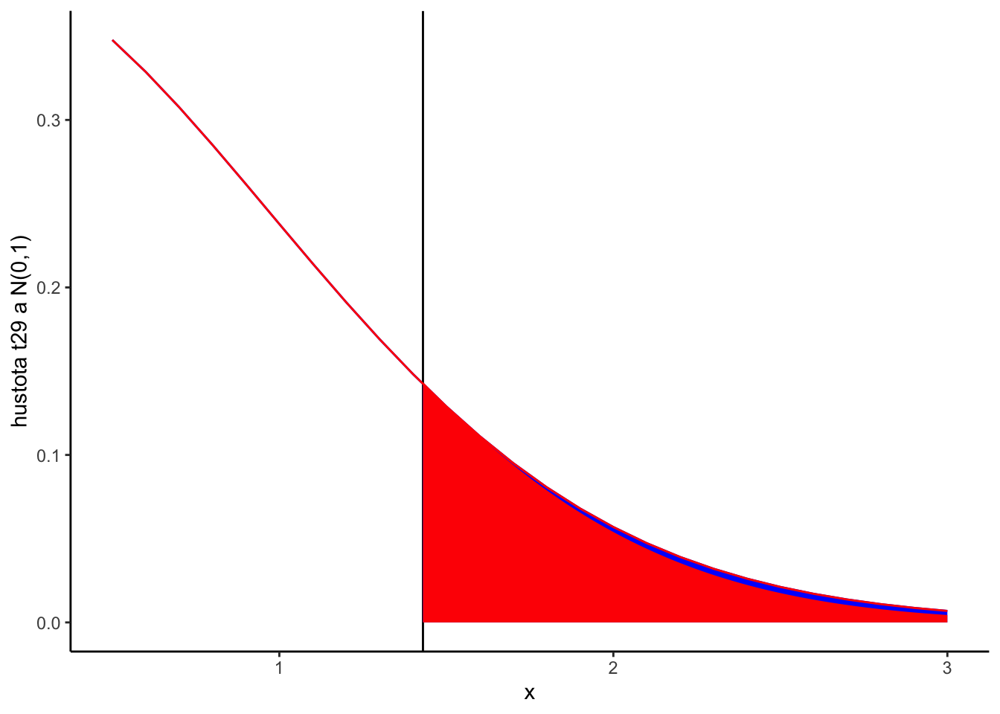
P-hodnota testu je iná, je to 0.0817, takže t-rozdelenie prisudzuje chvostom väčšiu váhu.
## [1] 0.08170164V praxi je to však veľmi jednoduché, stačí takýto príkaz a nemusíme nič počítať sami.
##
## One Sample t-test
##
## data: zmena
## t = 1.4331, df = 29, p-value = 0.08126
## alternative hypothesis: true mean is greater than 15
## 95 percent confidence interval:
## 14.39619 Inf
## sample estimates:
## mean of x
## 18.253027.2 Dvojvýberové testy
Myšlienka ostáva tá istá. Jediné, čo sa mení, je testovacia štatistika.
Teraz budeme mať dve rôzne vzorky z dvoch distribúcií. A budeme testovať rozdiel ich stredných hodnôt. Najčastejšie testujeme, či je rozdiel nula alebo nie.
Uvažujme dve vzorky \(X_1, X_2, X_3, \dots, X_{n_{x}}\) a \(Y_1, Y_2, Y_3, \dots Y_{n_{y}}\), veľkostí \(n_x\) a \(n_y.\)
T-testy, ktoré tu prezentujeme sa dajú nahradiť Z-testami, v prípade, že je dátová vzorka dostatočne veľká je skreslenie minimálne.
7.2.1 Rovnaká variancia
Ak \[X_1 \sim N(\mu_x,\sigma^2)\] \[Y_1 \sim N(\mu_y,\sigma^2)\]
Ak majú spoločnú rovnakú varianciu, tak ju môžeme odhadnúť spolu \[S^2 = \frac{(n_x-1)S^2_x + (n_y - 1)S^2_y}{(n_x-1) + (n_y-1)}\] teda vážený priemer výberových variancií \(X\) a \(Y.\)
Náhodná premenná
\[T \equiv \frac{(\bar{X} - \bar{Y}) - (\mu_x - \mu_y)}{S \sqrt{\frac{1}{n_x} + \frac{1}{n_y}}} \sim t_{n_x + n_y - 2}\] Takźe máme rozdelenie testovacej štatistiky.
Príklad 7.1 (dojazd) Majú staršie auta iný diaľničný dojazd? Pozrime sa osobitne na diaľničný a mestský dojazd. Tu je syntax ako to urobíme v Rku.
##
## Two Sample t-test
##
## data: mpg$hwy[mpg$year >= 2004] and mpg$hwy[mpg$year < 2004]
## t = 0.032864, df = 232, p-value = 0.9738
## alternative hypothesis: true difference in means is not equal to 0
## 95 percent confidence interval:
## -1.511559 1.562841
## sample estimates:
## mean of x mean of y
## 23.45299 23.42735##
## Two Sample t-test
##
## data: hwy by year < 2004
## t = 0.032864, df = 232, p-value = 0.9738
## alternative hypothesis: true difference in means between group FALSE and group TRUE is not equal to 0
## 95 percent confidence interval:
## -1.511559 1.562841
## sample estimates:
## mean in group FALSE mean in group TRUE
## 23.45299 23.42735##
## Two Sample t-test
##
## data: mpg$cty[mpg$year >= 2004] and mpg$cty[mpg$year < 2004]
## t = -0.5675, df = 232, p-value = 0.5709
## alternative hypothesis: true difference in means is not equal to 0
## 95 percent confidence interval:
## -1.414159 0.781680
## sample estimates:
## mean of x mean of y
## 16.70085 17.01709##
## Two Sample t-test
##
## data: cty by year < 2004
## t = -0.5675, df = 232, p-value = 0.5709
## alternative hypothesis: true difference in means between group FALSE and group TRUE is not equal to 0
## 95 percent confidence interval:
## -1.414159 0.781680
## sample estimates:
## mean in group FALSE mean in group TRUE
## 16.70085 17.01709Nič tomu nenasvedčuje.
Ako to reportovať a zobraziť? Je užitočné tieto dáta aj zobraziť
t <- t.test(hwy ~ (year<2004), data=mpg,var.equal=TRUE)
mpg$vek <- factor(mpg$year<2004,labels=c("mladšie","starśie"))
library(tidyverse)
set.seed(753)
ggplot(data=mpg,aes(x=vek,y=hwy,fill=vek)) +
geom_boxplot(width=0.2,
outlier.shape = NA)+
geom_jitter(aes(x=vek,y=hwy),
width=0.2,
color="grey60") +
labs(title=paste0("Diaľničný dojazd (p = ",
as.character(round(t$p.value,3)),")"),
y="Dojazd",x ="Vek auta")+
theme_classic()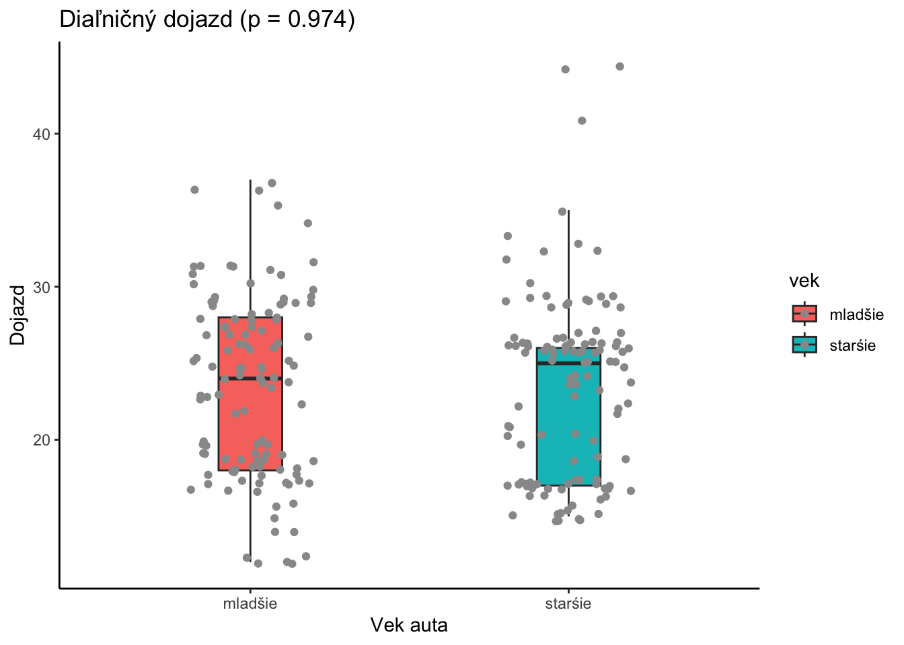
Na základe dvojvýberového t-testu s rovnakými varianciami nevieme na hladine významnosti 5% zamietnuť, že priemerný diaľničný dojazd mladších aút je iný ako starších aút. Hodnota testovacej štatistiky je 0.032864 čomu zodpovedá p-hodnota 0.973.
t2 <- t.test(cty ~ (year<2004), data=mpg ,var.equal=TRUE)
library(tidyverse)
set.seed(753)
ggplot(data=mpg,aes(x=vek,y=cty,fill=vek)) +
geom_boxplot(width=0.2,
outlier.shape = NA)+
geom_jitter(aes(x=vek,y=cty),
width=0.2,
color="grey60") +
labs(title=paste0("Dojazd v meste (p = ",
as.character(round(t2$p.value,3)),")"),
y="Dojazd",x ="Vek auta")+
theme_classic()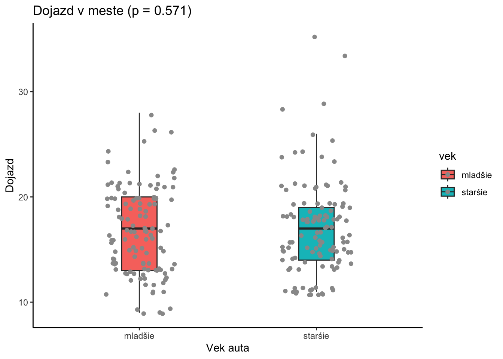
Na základe dvojvýberového t-testu s rovnakými varianciami nevieme na hladine významnosti 5% zamietnuť, že priemerný dojazd v meste mladších aút je iný ako starších aút. Hodnota testovacej štatistiky je -0.5675 čomu zodpovedá p-hodnota 0.571.7.2.2 Rôzna variancia
Ak \[X_1 \sim N(\mu_x,\sigma_x^2)\] \[Y_1 \sim N(\mu_y,\sigma_y^2)\]
Náhodná premenná
\[T \equiv \frac{(\bar{X} - \bar{Y}) - (\mu_x - \mu_y)}{\sqrt{\frac{s^2_x}{n_x} + \frac{s^2_y}{n_y}}} \sim t_{n_x + n_y - 2}\] má približné t-rozdelenie s
\[df = \frac{\left(\frac{s^2_x}{n_x}+\frac{s^2_y}{n_y} \right)^2}{\frac{\left(\frac{s^2_x}{n_x}\right)^2}{n_x-1} + \frac{\left(\frac{s^2_y}{n_y}\right)^2}{n_y-1}}.\] stupňami voľnosti.
Testu založenému na tejto testovacej štatistike hovoríme Welchov test.
Vybrať test s rovnakými varianciami alebo rôznymi varianciami?
Záleží. Ak máme dobrý dôvod si myslieť, že variancie sú rovnaké, tak je rozumné túto informáciu využiť a použiť efektívnejší test, teda test, ktorý bude častejšie zamietať nesprávnu nulovú hypotézu. Na druhej strane ak nevieme, či sú variancie rovnaké, čo je v reálnych situáciách väčšinou, tak je lepšie a opatrnejšie použiť robustnejší test, ktorý umožňuje rôzne variancie. Áno, budeme menej efektívny v prípade, že variancie sú rovnaké ale aspoň nezaložíme naše testovanie na nepravdivej štatistike, ak by variancie boli nerovnaké. Väčšinou preto vyberáme Welchov test.
Vráťme sa k dátam o výsledkoch testov.
set.seed(2930)
data_test8r <- data.frame(
school=factor(rep(c("8r_gym", "4r_gym"), each=40)),
score=round(c(rnorm(40, mean=75, sd=8), rnorm(40, mean=65, sd=5)))
)Pripomeňme si, že takto vyzerala ich distribúcia.

Znovu existujú dva rôzne spôsoby (syntaxe) ako spustiť tento test, ktoré dávajú identické výsledky.
##
## Welch Two Sample t-test
##
## data: score by school
## t = -6.7799, df = 61.971, p-value = 5.173e-09
## alternative hypothesis: true difference in means between group 4r_gym and group 8r_gym is not equal to 0
## 95 percent confidence interval:
## -12.074404 -6.575596
## sample estimates:
## mean in group 4r_gym mean in group 8r_gym
## 66.150 75.475t.test(data_test8r$score[data_test8r$school=="4r_gym"],data_test8r$score[data_test8r$school=="8r_gym"])##
## Welch Two Sample t-test
##
## data: data_test8r$score[data_test8r$school == "4r_gym"] and data_test8r$score[data_test8r$school == "8r_gym"]
## t = -6.7799, df = 61.971, p-value = 5.173e-09
## alternative hypothesis: true difference in means is not equal to 0
## 95 percent confidence interval:
## -12.074404 -6.575596
## sample estimates:
## mean of x mean of y
## 66.150 75.475set.seed(753)
ggplot(data=data_test8r,aes(x=school,y=score,fill=school)) +
geom_boxplot(width=0.2,
outlier.shape = NA)+
geom_jitter(aes(x=school,y=score),
width=0.2,
color="grey60") +
labs(title=paste0("Akademický výkon (p = ",
as.character(round(t_test$p.value,3)),")"),
y="Score(points)",x ="Typ školy")+
theme_classic()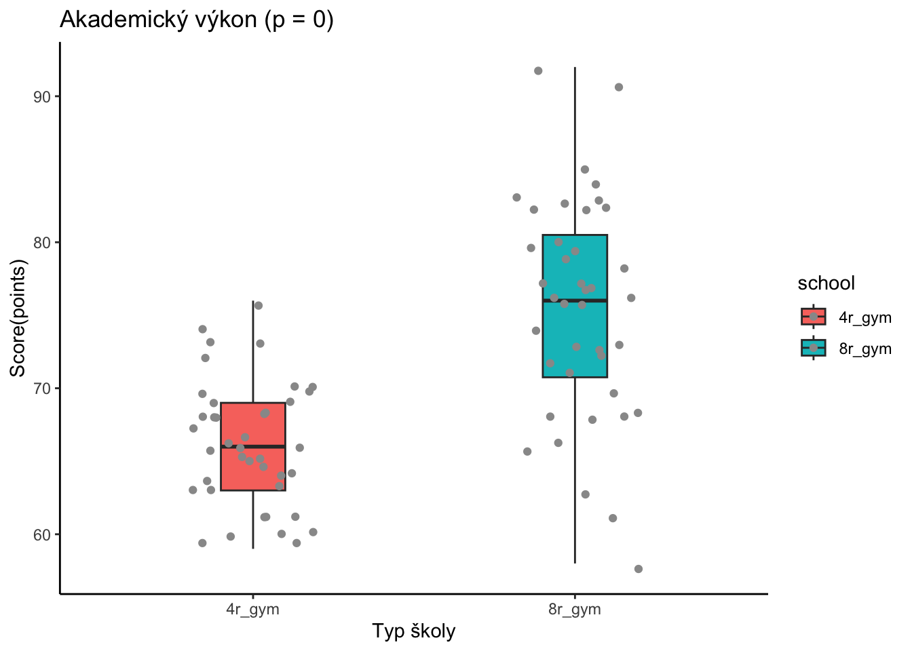
Na základe dvojvýberového t-testu s rôznymi varianciami (Welchov test) na hladine významnosti 5% zamietame, že priemerný výsledok na testoch 4ročných gymnázií je iný ako 8ročných gymnázií. Hodnota testovacej štatistiky je -6.78 čomu zodpovedá p-hodnota \(5.17 \cdot 10^{-9}\). Takže veľmi silne zamietame nulovú hypotézu, že sú tieto školy rovnaké, čo sa týka priemerných výsledkov testov.
7.2.3 Párové testy
Párový test nie je nič iné ako jednovýberový test aplikovaný na premennú \(X - Y,\) keď \(n_x = n_y.\) Príklad, ktorý sme v sekcii používali (zlepšenie) bol presne taký istý.
Párový test so sebou nesie samozrejme viacej informácie ako obyčajný (nepárový) dvojvýberový test.
##
## Welch Two Sample t-test
##
## data: test by cas
## t = 1.5229, df = 42.651, p-value = 0.1352
## alternative hypothesis: true difference in means between group po and group pred is not equal to 15
## 95 percent confidence interval:
## 13.94414 22.56190
## sample estimates:
## mean in group po mean in group pred
## 64.87932 46.62629##
## Paired t-test
##
## data: test by cas
## t = 1.4331, df = 29, p-value = 0.1625
## alternative hypothesis: true mean difference is not equal to 15
## 95 percent confidence interval:
## 13.61057 22.89547
## sample estimates:
## mean difference
## 18.25302##
## One Sample t-test
##
## data: zmena
## t = 1.4331, df = 29, p-value = 0.1625
## alternative hypothesis: true mean is not equal to 15
## 95 percent confidence interval:
## 13.61057 22.89547
## sample estimates:
## mean of x
## 18.25302Obyčajný nepárový test ignoruje informáciu, že dané testy boli písané tými istými ľuďmi.
Pozrime sa na klasický prípad Studenta, podľa, ktorého je t-test označovaný aj ako Studentov t-test. Zaoberal sa o koľko viacej ľudia spali keď užívali rôzne lieky.
##
## Paired t-test
##
## data: extra by group
## t = -4.0621, df = 9, p-value = 0.002833
## alternative hypothesis: true mean difference is not equal to 0
## 95 percent confidence interval:
## -2.4598858 -0.7001142
## sample estimates:
## mean difference
## -1.58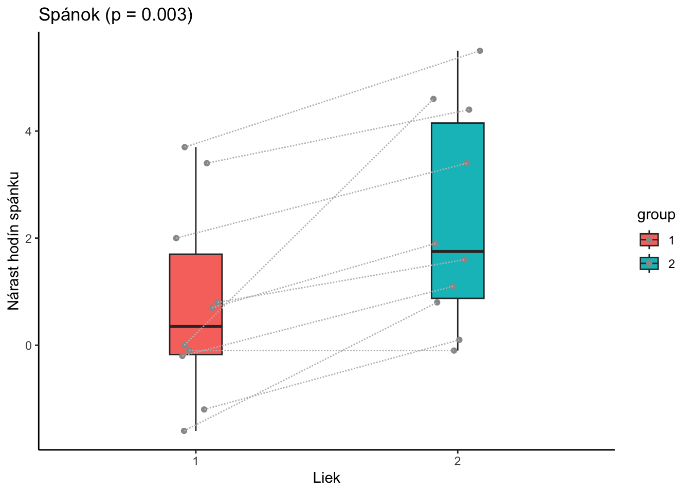
Na základe párového t-testu na hladine významnosti 5% zamietame, že priemerné predĺženie spánku je rovnaké pri užívaní rôznych liekov. Hodnota testovacej štatistiky je -4.062 čomu zodpovedá p-hodnota 0.0028.
Poznamenajme, že ak by sme ignorovali informáciu, že ide o párové dáta, na hladine významnosti 5% by sme ju ani nevedeli zamietnuť(!)
##
## Welch Two Sample t-test
##
## data: extra by group
## t = -1.8608, df = 17.776, p-value = 0.07939
## alternative hypothesis: true difference in means between group 1 and group 2 is not equal to 0
## 95 percent confidence interval:
## -3.3654832 0.2054832
## sample estimates:
## mean in group 1 mean in group 2
## 0.75 2.337.3 Konfidenčný interval
Doteraz sme používali p-hodnotu na kvantifikáciu toho, ako veľmi je nulová hypotéza kompatibilná s našou dátovou vzorkou. Iný, alternatívny pohľad na kvantifikovanie neistoty je pozrieť sa na množinu všetkých tých hodnôt, ktoré by neboli bývali zamietnuté pri nejakej fixnej hladine významnosti.
Vezmime si napríklad jednovýberový T-test. T-štatistika \(T \equiv \sqrt{n}\frac{\bar{X}_n - \mu}{S}\) má \(t_{n-1}\) rozdelenie, takže
\[P\left(t^{(\alpha/2)}_{n-1} \leq T \leq t^{(1-\alpha/2)}_{n-1}\right) = P\left(t^{(\alpha/2)}_{n-1} \leq \sqrt{n}\frac{\bar{X}_n - \mu}{S} \leq t^{(1-\alpha/2)}_{n-1}\right) = 1-\alpha,\] kde \(t^{(\alpha)}_{n-1}\) označuje \(100(\alpha/2)\%\)-ný kvantil T-rozdelenia s \(n-1\) stupňami voľnosti. Nakoľko je T-rozdelenie symetrické, máme \(t^{(\alpha/2)}_{n-1} = - t^{(1-\alpha/2)}_{n-1}.\) Teda:
\[P\left(-t^{(1-\alpha/2)}_{n-1} \leq \sqrt{n}\frac{\bar{X}_n - \mu}{S} \leq t^{(1-\alpha/2)}_{n-1}\right) = 1-\alpha,\] Ak je naša dátová vzorka veľkosti \(n=10\), a hladina významnosti \(5\%\) potom máme \(t_9^{0.975} = 2.262.\)
Nulovú hypotézu zamietame vždy ak \(\bar{X}_n > \mu + t^{(1-\alpha/2)}_{n-1} \frac{S}{\sqrt{n}}\) alebo \(\bar{X}_n < \mu - t^{(1-\alpha/2)}_{n-1} \frac{S}{\sqrt{n}}.\) Nižšie sú zobrazené hodnoty \(t^{(0.025)}_{9}\) a \(t^{(0.975)}_{9},\) súčet obsahov týchto dvoch modrých plôch dáva \(0.05\).
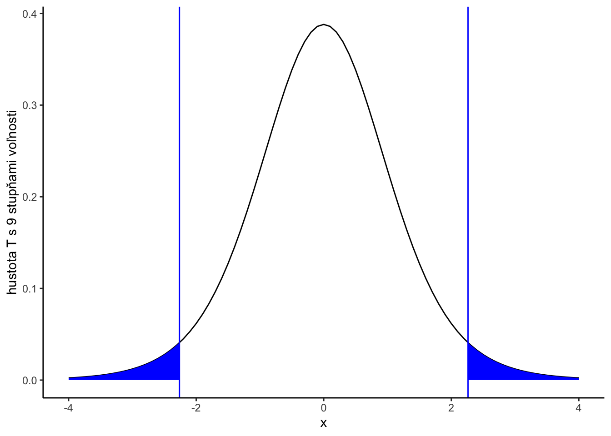
Teraz môžeme zadefinovať \((1-\alpha)100\%\)ný konfidenčný interval pre odhad strednej hodnoty ako množinu všetkých parametrov \(\mu\), ktoré by neboli zamietnuté štatistickým testom na hladine významnosti \(\alpha.\)
\[CI^{(1-\alpha)} = \left[\bar{X}_n - t^{(1-\alpha/2)}_{n-1} \frac{S}{\sqrt{n}},\bar{X}_n + t^{(1-\alpha/2)}_{n-1} \frac{S}{\sqrt{n}} \right].\]
Je dôležité si uvedomiť, že konfidenčný interval je náhodný interval. Náhodnosť plynie z \(\bar{X}_n\) a \(S\), ktoré sú náhodné premenné. To znamená, že jedna dátová vzorka nám dá len jednu realizáciu \(CI^{(1-\alpha)}.\) Jeho interpretácia je taká, že ak by sme dostali 100 náhodných vzoriek z modelu, tak tento náhodný interval by ho pokryl približne 5 krát.
Pozrime sa na to na nasledujúcej simulácii (ktorú si urobíme ako cvičenie):
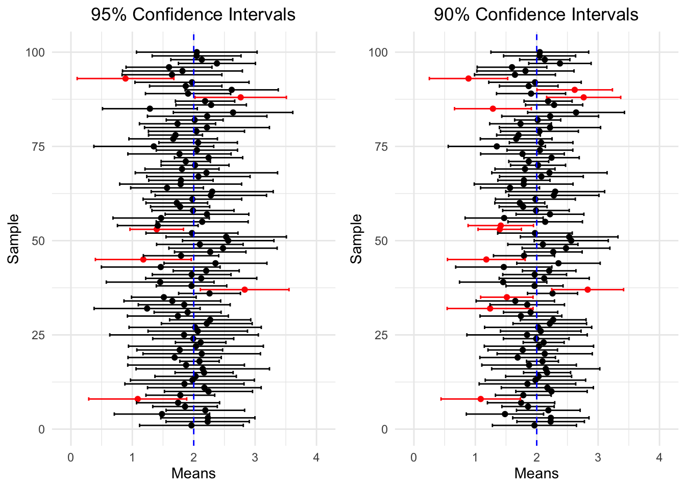
Pozorujeme, že spomedzi 100 simulácií \(95\%\)ný konfidenčný interval pokryl skutočnú hodnotu 94 krát, zatiaľčo \(95\%\)ný konfidenčný interval pokryl túto hodnotu 89 krát. Ak by sme mali týcho simulácii viacej, tento pomer by sa blížil k \(95\%\) a \(90\%\).7.4 Testovanie podielu
Niekedy sme v situácii, že potrebujeme skúmať rozdiely medzi skupinami a premenná, ktorú sledujeme je binárna - áno/nie.
- Niečo nastalo/nenastalo
- Produkt bol zakúpený
- Pacient sa vyzdravil do 2 týždňov
7.4.1 Testovanie podielu pre jednu skupinu
Predstavme si nasledovnú situáciu. Zo vzorky \(n=1024\) respondentov získa v prieskume volebných preferencií určitá strana \(6.152\%\) (63 hlasov). Zaujíma ju, či sa dostane do parlamentu, teda, či prekročí hranicu \(5\%\).
Uvažujme, že počet respondentov, ktorí odpovedali, že by ju volili je rozdelený binomicky s neznámou pravdepodobnosťou \(p\):
\[Y \sim Bin(n,p)\].
Akonáhle je \(n\) dostatočne veľké, tak máme
\[Z \equiv \frac{Y - np}{\sqrt{n p (1-p)}} \rightarrow_D N(0,1).\]
Toto platí kvôli Zákonu o veľkých číslach (\(Y = X_1 + \dots + X_n,\) kde \(X_i \sim Bern(p)\)) a skutočnosti, že \(\text{E}[Y] = np\) a \(\text{Var}[Y] = np(1-p).\)
V našom prípade
\[\frac{53 - 51.2}{\sqrt{1024 \cdot 0.05 \cdot 0.95}} \approx 1.692\] Porovnáme túto hodnotu s \(95\%\)ným kvantilom normálneho rozdelenia, ktorý je 1.645, takže zamietli by sme nulovú hypotézu toho, že \(p=0.05\) v prospech jednostrannej hypotézy, že \(p>0.05\) na hladine významnosti \(5\%.\)
Ako vyzerá obojstranný konfidenčný interval?
\[P\left(-z^{(1-\alpha/2)} \leq Z \leq z^{(1-\alpha/2)}_{n-1}\right) = P\left(-z^{(1-\alpha/2)} \leq \frac{Y - np}{\sqrt{n p (1-p)}} \leq z^{(1-\alpha/2)}\right) \approx 1-\alpha,\] Teraz z praktických dôvodov nahradíme neznáme \(p\) v menovateli jeho odhadom \(\hat p = Y/n\) (v našom prípade \(6.152\%\)) Aproximatívna rovnosť \(\approx\) teraz bude mať dva zdroje chyby - \(\frac{Y - np}{\sqrt{n p (1-p)}}\) je totiž len približne normálne rozdelené a naviac menovateľ \(\sqrt{n \hat p (1- \hat p)}\) je len približne smerodajnou odchýlkou \(Y.\)
\[P\left(-z^{(1-\alpha/2)} \leq \frac{Y - np}{\sqrt{n \hat p (1- \hat p)}} \leq z^{(1-\alpha/2)}\right) \approx 1-\alpha.\]
V tejto zátvorke potrebuje popreusporiadať objekty tak, aby sme osamostatnili \(p\).
\[\begin{eqnarray*} P\left(-z^{(1-\alpha/2)} \leq \frac{Y - np}{\sqrt{n \hat p (1- \hat p)}} \leq z^{(1-\alpha/2)}\right) &=& 1-\alpha, \\ P\left(-z^{(1-\alpha/2)}\sqrt{n \hat p (1- \hat p)} \leq Y - np \leq z^{(1-\alpha/2)}\sqrt{n \hat p (1- \hat p)}\right) &=& 1-\alpha, \\ P\left(Y + z^{(1-\alpha/2)}\sqrt{n \hat p (1- \hat p)} \geq np \geq Y - z^{(1-\alpha/2)}\sqrt{n \hat p (1- \hat p)}\right) &=& 1-\alpha,\\ P\left(\frac{Y}{n} + z^{(1-\alpha/2)}\sqrt{\frac{1}{n} \hat p (1- \hat p)} \geq p \geq \frac{Y}{n} - z^{(1-\alpha/2)}\sqrt{\frac{1}{n} \hat p (1- \hat p)}\right) &=& 1-\alpha,\\ P\left(\hat p - z^{(1-\alpha/2)}\sqrt{\frac{1}{n} \hat p (1- \hat p)} \leq p \leq \hat p + z^{(1-\alpha/2)}\sqrt{\frac{1}{n} \hat p (1- \hat p)}\right) &=& 1-\alpha, \end{eqnarray*}\]
Takže konfidenčný interval dostávame nasledovný:
\[CI^{(1-\alpha)} = \left[\hat p - z^{(1-\alpha/2)}\sqrt{\frac{\hat p (1- \hat p)}{n}},\hat p + z^{(1-\alpha/2)}\sqrt{\frac{\hat p (1- \hat p)}{n} } \right].\] Pozrime sa na nasledovnú tlačovú správu o volebnom prieskume jednej slovenskej prieskumnej agentúry.
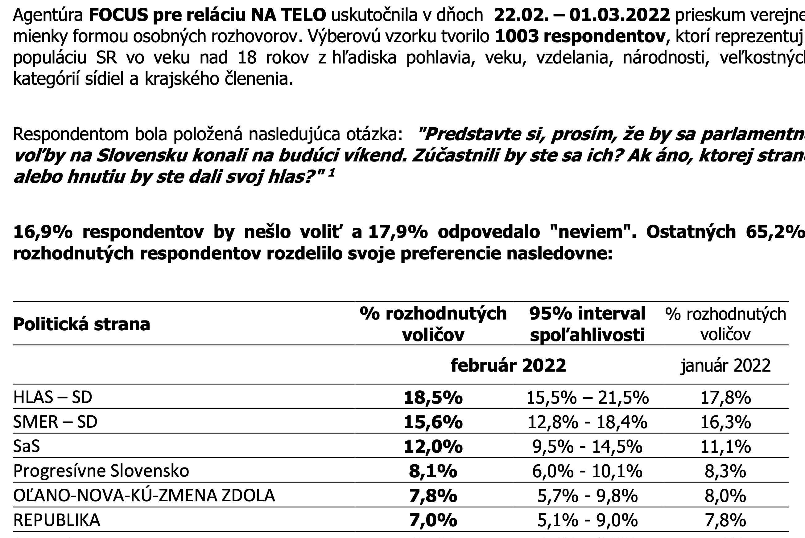
Obrázok 7.1: Prieskum volebných preferencií z februára 2022.
Poďme sa pozrieť hneď na prvý riadok. Z 1003 respondentov \(65.2\%\) respondentov označilo stranu, to jest 654. Z nich \(18.5\%\) zodpovedá 121 respondentov. \(95\%\)ný interval spoľahlivosti je preto:
hatp <- 121/654
c_low <- hatp - qnorm(0.975)*sqrt(hatp*(1-hatp)/654)
c_high <- hatp + qnorm(0.975)*sqrt(hatp*(1-hatp)/654)
round(c(c_low, c_high),3)## [1] 0.155 0.215Test, ktorý berie do úvahy skutočnosť, že binomicky rozdelená premenná nie je spojitá, je implementovaný pomocou
##
## 1-sample proportions test with continuity correction
##
## data: 121 out of 654, null probability 0.5
## X-squared = 258.29, df = 1, p-value < 2.2e-16
## alternative hypothesis: true p is not equal to 0.5
## 95 percent confidence interval:
## 0.1564114 0.2173919
## sample estimates:
## p
## 0.1850153a verzia vhodná na malé dátové vzorky (presný test)
##
## Exact binomial test
##
## data: 121 and 654
## number of successes = 121, number of trials = 654, p-value < 2.2e-16
## alternative hypothesis: true probability of success is not equal to 0.5
## 95 percent confidence interval:
## 0.1559671 0.2169387
## sample estimates:
## probability of success
## 0.1850153Z praktického hľadiska medzi nimi väčšinou nie je veľký rozdiel. Extenzívne porovnanie kvality rôznych testov je napríklad tu.
Poďme sa bližšie pozrieť pod kapotu prop.test s parametrom correct=FALSE. Budeme mechanicky meniť pravdepodobnosť testu a ukladať si p-hodnotu.
##
## 1-sample proportions test without continuity correction
##
## data: 121 out of 654, null probability 0.2
## X-squared = 0.91781, df = 1, p-value = 0.338
## alternative hypothesis: true p is not equal to 0.2
## 95 percent confidence interval:
## 0.1571244 0.2165849
## sample estimates:
## p
## 0.1850153## [1] 0.3380497##
## 1-sample proportions test without continuity correction
##
## data: 121 out of 654, null probability 0.5
## X-squared = 259.55, df = 1, p-value < 2.2e-16
## alternative hypothesis: true p is not equal to 0.5
## 95 percent confidence interval:
## 0.1571244 0.2165849
## sample estimates:
## p
## 0.1850153p_vec <- seq(0.14,0.22,by=0.00001)
np <- length(p_vec)
pval_vec <- numeric(np)
for (ip in 1:np){
pval_vec[ip] <- prop.test(121,654,p=p_vec[ip],correct=FALSE)$p.value
}
range(p_vec[which(pval_vec>0.05)])## [1] 0.15713 0.21658Teraz vidíme, že funkcia prop.test implementuje nasledovný konfidenčný interval,
\[P\left(-z^{(1-\alpha/2)} \leq \frac{Y - np}{\sqrt{n p (1- p)}} \leq z^{(1-\alpha/2)}\right) \approx 1-\alpha,\] rozdielom je, že v menovateli nie je aproximácia.
A teraz sa pozrime na exaktný test binom.test. Tento test nerobí vôbec žiadnu aproximáciu normálnym rozdelením.
##
## Exact binomial test
##
## data: 121 and 654
## number of successes = 121, number of trials = 654, p-value = 0.3533
## alternative hypothesis: true probability of success is not equal to 0.2
## 95 percent confidence interval:
## 0.1559671 0.2169387
## sample estimates:
## probability of success
## 0.1850153#more extreme number than 121?
plot(80:170,dbinom(80:170, 654, p=0.2))
points(121,dbinom(121, 654, p=0.2),col="red")
abline(h=dbinom(121, 654, p=0.2),col="red")
points(80:121,dbinom(80:121, 654, p=0.2),col="green")
points(141:170,dbinom(141:170, 654, p=0.2),col="green")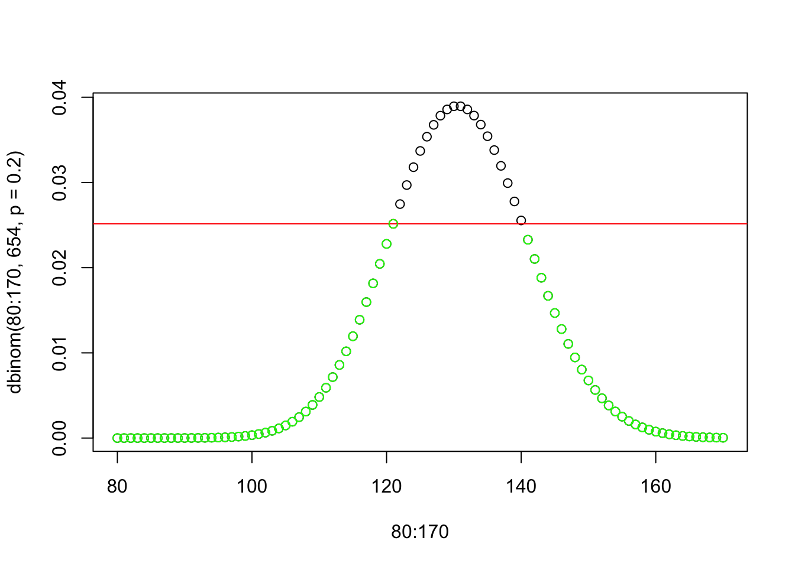
## [1] 0.3532905Za predpokladu nulovej hypotézy priamo vieme rozdelenie. Sčítame pravdepodobnosti ešte extrémnejšej udalosti.
7.4.2 Testovanie rovnosti podielov pre dve skupiny
Testovacia štatistika, ktorá testuje nulovú hypotézu, že proporcie v dvoch vzorkách veľkosti \(n_1\) a \(n_2\) sú rovnaké, má nasledovnú formu:
\[Z \equiv \frac{\hat p_1 - \hat p_2 }{\sqrt{ \hat p (1 - \hat p) \left(\frac{1}{n_1} + \frac{1}{n_2}\right) }} \rightarrow_D N(0,1),\]
kde \(\hat p_1 = Y_1/n_1, \hat p_2 = Y_2/n_2, \hat p = \frac{Y_1 + Y_2}{n_1 + n_2}.\)
Príklad 7.2 Chceli by sme porovnať efekt dvoch jedov na hmyz. V prvej skupine sme namerali, že 28 z 90 hmyzov zahynulo. V druhej skupine to bolo 8 zo 60. Hodnota \(Z\) štatistiky je
hatp1 <- 28/90
hatp2 <- 8/60
hatp <- (28+8)/(90+60)
( Z <- (hatp1-hatp2)/sqrt(hatp*(1-hatp)*(1/90 + 1/60)) )## [1] 2.497562a kritická hodnota obojstranného 95\(\%\) testu je
## [1] 1.959964takže zamietame nulovú hypotézu, že dva insekticídy sú rovnaké. P-hodnota obojstranného testu je
## [1] 0.01250505Iný spôsob na základe inej testovacej štatistiky s korekciou na spojitosť je
##
## 2-sample test for equality of proportions with continuity correction
##
## data: c(28, 8) out of c(90, 60)
## X-squared = 5.3012, df = 1, p-value = 0.02131
## alternative hypothesis: two.sided
## 95 percent confidence interval:
## 0.03525685 0.32029870
## sample estimates:
## prop 1 prop 2
## 0.3111111 0.13333337.5 Kontigenčné tabuľky
Začnime príkladom. Chceli by sme vedieť či súvisí farba očí s farbou vlasov. Máme odpozorovanú vzorku 592 ĺudí v rôznych kategóriách. Neexistuje žiadne prirodzené číselné usporiadanie farieb, ide o kategorickú premennú.
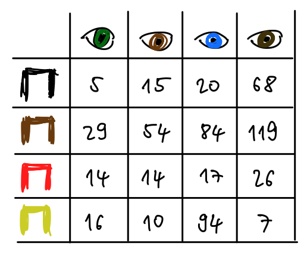
Vidíme, že máme 20 modrokých ľudí s čiernymi vlasmi ale 68 ľudí s hnedými očami (20 ľudí má orieškovú farbu očí - pozn. ja som tie farby nevymýšľal.).
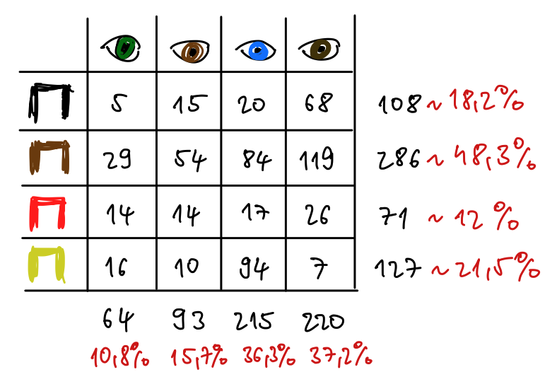
Modrookých a hnedookých ľudí je podobne veľa, okolo 37\(\%\). Predstavme si teraz situáciu, že vieme, len proporcie po stĺpcoch, že nevieme aká je súvzťažnosť medzi farbou očí a vlasov.
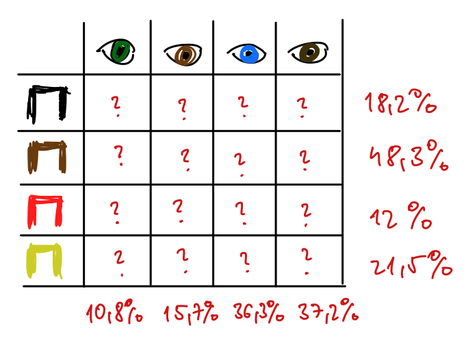
Ak, by bola farba vlasov a očí nezávislá, potom by sme vedeli aká je proporcia jednotlivých kombinácií. Napríklad hnedovlasých ľudí s orieškovými očami by malo byť \(0.483*0.157=0.0759.\)
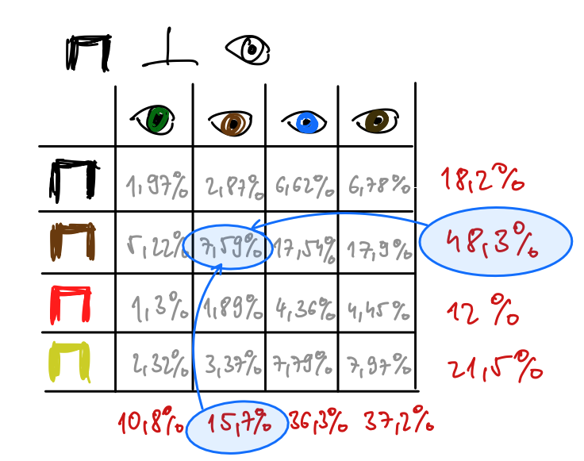
Takže by sme očakávali, že za predpokladu nezávislosti by ich malo byť zhruba \(44.9\).
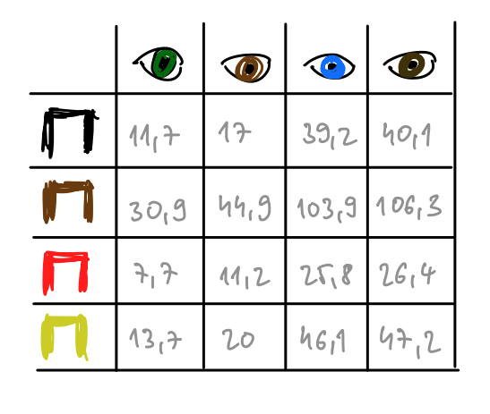
Teraz môžeme testovaciu založiť na tom, že očakávaná tabuľka za predpokladu nezávislosti by mala byť blízka tej pozorovanej. Ak budú rozdiely veľmi veľké, zamietame nulovú hypotézu nezávislosti.
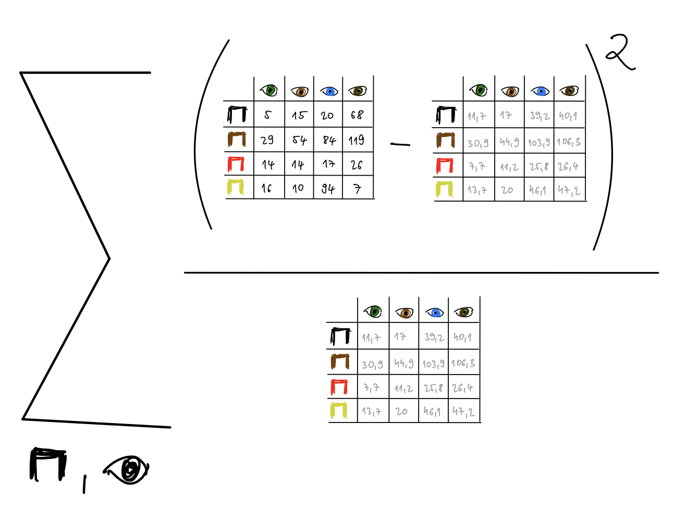
Testovacia štatistika má nasledovnú formu:
\[ C = \sum_i \frac{(O_i - E_i)^2}{E_i} \sim \chi^2_{m}, \] kde
- \(i\) je skupina (napríklad kombinácia farby vlasov a očí)
- \(O_i\) je počet pozorovaní v skupine \(i\)
- \(E_i\) je počet očakávaných pozorovaní v skupine \(i\) za platnosti nezávislosti
- \(m\) označuje počet stupňov voľnosti. Je to \(m = (c_1 - 1)(c_2-1)\) kde \(c_1\) je počet kategórii prvej kategorickej premennej a \(c_2\) je počet kategórii druhej kategorickej premennej. (V našom prípade \(c_1 = c_2 = 4\) a preto \(m = (4-1)(4-1)=9.\))
Tu je mechanická implementácia v R ako aj výsledok za použitia funkcie chisq.test.
## y eye hair
## 1 5 green BLACK
## 2 29 green BROWN
## 3 14 green RED
## 4 16 green BLOND
## 5 15 hazel BLACK
## 6 54 hazel BROWN
## 7 14 hazel RED
## 8 10 hazel BLOND
## 9 20 blue BLACK
## 10 84 blue BROWN
## 11 17 blue RED
## 12 94 blue BLOND
## 13 68 brown BLACK
## 14 119 brown BROWN
## 15 26 brown RED
## 16 7 brown BLOND## eye
## hair green hazel blue brown
## BLACK 5 15 20 68
## BROWN 29 54 84 119
## RED 14 14 17 26
## BLOND 16 10 94 7## Call: xtabs(formula = y ~ hair + eye, data = haireye)
## Number of cases in table: 592
## Number of factors: 2
## Test for independence of all factors:
## Chisq = 138.29, df = 9, p-value = 2.325e-25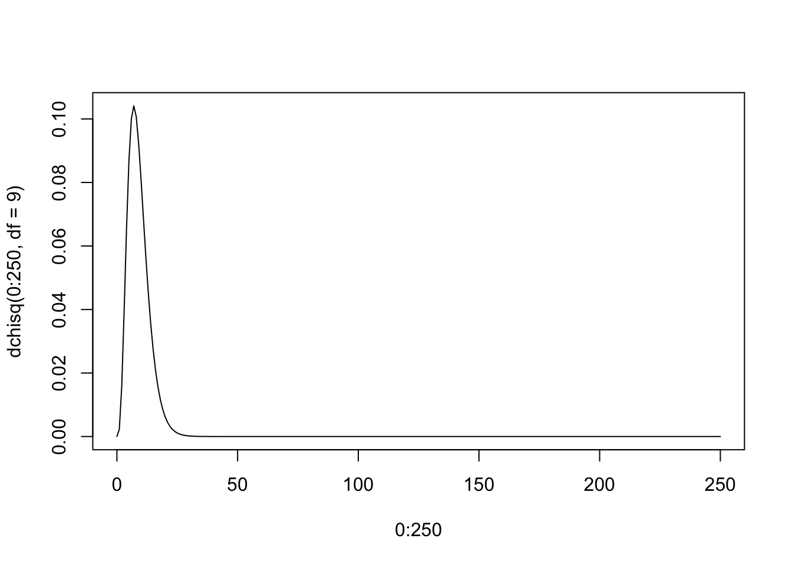
h <- margin.table(ct,1)/sum(margin.table(ct,1))
e <- margin.table(ct,2)/sum(margin.table(ct,2))
#table under independency
indTable <- h %*% t(e)
sum(indTable)## [1] 1## [1] 138.2898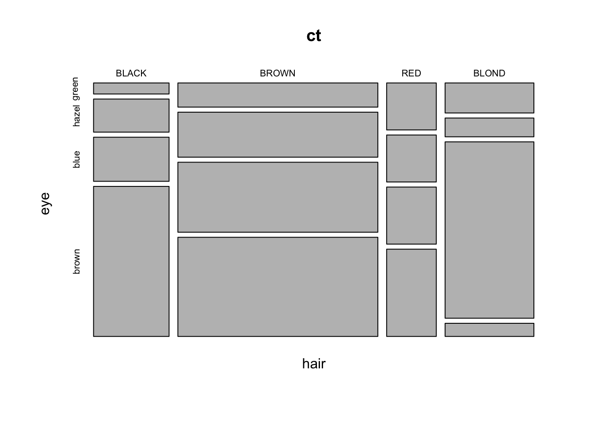
##
## Pearson's Chi-squared test
##
## data: ct
## X-squared = 138.29, df = 9, p-value < 2.2e-16Je neprekvapivé, že v tomto prípade veľmi silno zamietame nulovú hypotézu o tom, že farba očí a vlasov je nezávislá.
7.6 Zopár poznámok na záver.
- V praxi je uźitočné zobraziť dáta. Vždy.
- V drvivej väčšine prípadov robíme test s nerovnakými varianciami. Málokedy máme dôvod uvažovať, že vzorky majú rovnakú varianciu.
- Na to, ako veĺmi popisuje normálne rozdelenie naše vzorky môžeme pomôcť vizualizačné nástroje. Ak aj nie sú normálne, vďaka centrálnej limitnej vete budú pre rastúcu dátovú vzorku naše štatistiky aspoň asymptoticky t alebo normálne rozdelené.
- Na veľmi malé dátové vzorky sa niekedy používajú aj neparametrické testy. Tieto nespomíname v tomto kurze.
- Je zvyklosťou používať hladinu významnosti 5%. Ale to je všetko, je to zvyk. Nie sú žiadne teoretické dôvody, prečo je toto menej vhodné číslo ako 1% alebo 11.343%.
- P-hodnoty sú častokrát dezinterpretované. P-hodnota hovorí, že
- za platnosti nulovej hypotézy (napríklad \(\mu=3\))
- za platnosti modelových predpokladov (napr. rovnaká variancia)
- aká by bola šanca, že uvidíme ešte extrémnejší výsledok ako ten čo pozorujeme, ak by sme opakovali zber dát mnohokrát. No ale toto je problém lebo my máme len jednu vzorku.
- Okrem śtatistickej významnosti sa treba pozerať aj na reálnu hodnotu rozdielu. Ak budeme mať dostatočne veľa dát, tak vždy zamietneme nulovú hypotézu, že stredné hodnoty dvoch vzoriek sú rovnaké. Ale ak je rozdiel v dojazde na nádrž auta 0.3km alebo ak je rozdiel v ročnej mzde 4.50eur, tak tento hoc aj štatisticky významný rozdiel nie je zaujímavý.
- Existuje dosť veľká skupina ľudí, ktorá považuje tento spôsob uvažovania (štatistické testovanie hypotéz) za neužitočný. (Toto môžeme byť aj my ale najprv tomu budeme musieť do hĺbky porozumieť)
- Štatistické testovanie hypotéz môže vzbudiť dojem vedeckosti. Nie je však o nič vedeckejšie ako zobraziť dáta vhodnou vizualizáciou. Na testovanie sa pozeráme ako na ďalší nástroj, ktorého ambíciou je byť užitočné. To, že niečo zamietneme alebo nezamietneme neznamená, že to je alebo nie je pravda. Testovanie nám umožňuje systematizovať naše rozhodovanie a kvantifikovať intuíciu, ktorú nadobudneme pozeraním sa na surové dáta.
7.7 Cvičenia
R súbor k cvičeniam 11.11.2022
R súbor k cvičeniam 18.11.2022
Cvičenie 7.1 (Indexy) Využite dáta EuStockMarkets z knižnice datasets a porovnajte priemerné denné výnosy nemeckého DAX a britského FTSE. Využijete párový alebo nepárový test? Dáta zobrazte.
Cvičenie 7.2 (Zločiny) Z datasetu USArrests porovnajte úrovne rôznych zločinov podľa toho, či žije v mestách veľa ľudí. Dáta zobrazte.
Cvičenie 7.3 (Vietor) V datasete airquality sú informácie o kvalite vzduchu. Otestujte jednostrannú hypotézu, či je rýchlosť vetra väčšia ako 11 míľ za hodinu. Podporte tento výsledok aj vizuálne. Porovnajte T-test so Z-testom.
Cvičenie 7.4 (Filmy) Z datasetu movies z knižnice ggplot2movies otestuje hypotézu, že vo filmoch vydaných po roku 2000 (vrátane) sú komédie kratšie ako akčné filmy. Filmy vhodne zobrazte (napríklad ak je priveľa dát na zobrazenie všetkých filmov, môžete zobraziť aspoň náhodnú podvzorku).
Cvičenie 7.5 (Energy) V datasete energy z knižnice ISwR je 24-hodinový energetický výdaj v MJ pre 22 pacientiek. Porovnajte a zobrazte energetický výdaj pre obézne a neobézne pacientky. Ešte predtým ako urobíte nejaký test dáta zobrazte. Aký výsledok očakávate? Je v tomto prípade test užitočný?
Cvičenie 7.6 (Rizikové faktory pre porážku) V datasete stroke z knižnice ISwR sú informácie o 829 pacientoch z Tartu medzi 1991-1993, ktorí mali porážku. Porovnajte sumárne štatistiky medzi pacientami, ktorí umreli a ktorí prežili (v prípade kategorických premenných sa pozrite na proporcie). V ktorých premenných nachádzate signifikantné rozdiely? Hint: pomôžte si funkciou st z knižnice vtable. Vaše zistenia interpretujte.
Cvičenie 7.7 (Konfidenčné intervaly) Zreprodukujte obrázok zo simulácie konfidenčných intervalov. Nastavte set.seed(29), zvoľte \(n=10\) a generujte vzorky z rozdelenia \(N(2,1).\)
Cvičenie 7.8 (Volebný prieskum) Mechanicky zreprodukujte konfidenčné intervaly z tohoto prieskumu.
Cvičenie 7.9 (Volebný prieskum 2) Tento prieskum neobsahuje kvantifikáciu neistoty pomocou konfidenčných intervalov. Doplňte informáciu o konfidenčných intervaloch na slajd na strane 8 (prieskum volebných preferencií). Je rozdiel v proporcii hlasujúcich pre 2 strany, ktoré získali \(5\%\) a \(4.7\%\) štatisticky významný?
Cvičenie 7.10 (Mzdy) Z kniźnice ISLR máme v datasete Wage informácie o mzdách. Vytvorte kategorickú premennú, či je daná mzda nad alebo pod mediánom. Pozrite sa ako táto kategorická premenná suvisí so vzdelaním a s rasou.